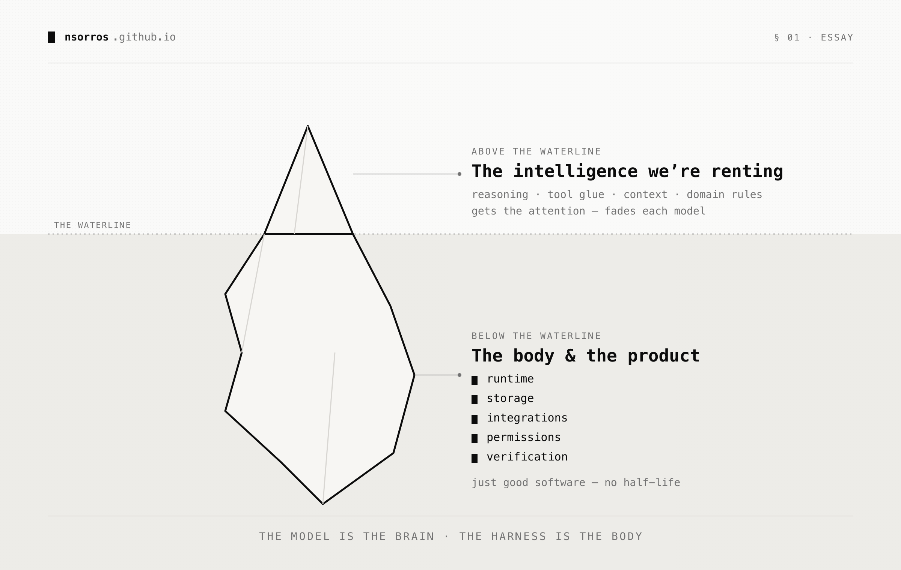

The model is the brain, the harness is the body
A couple of years ago, prompt engineering was going to be a career. Then the models got good enough that the tricks stopped mattering, and the job evaporated before it really arrived. Now it's all about harness engineering, the scaffolding around the model: how it reasons, calls tools, manages context, remembers, checks its work, is what we talk about now. So it's worth asking: will harness engineering have the same fate as prompt engineering?

This is not to say that the harness is not important because it is. It is what turns your AI model into an agent. However, it currently serves two distinct roles, one of which gets more publicity and is more important in the short term, with the other being the core of what stays. Let's start with the first.
Patching limitations of current models
One of the main reasons, harness engineering is getting a lot of attention is because it makes an existing model perform better on a task. That on its surface seems valuable and can be mistaken for long term business value. However, I don't think most of those fixes are here to stay. Here is a list of such fixes, some of which are already obsolete:
🤔 Reasoning like chain-of-thought, self-reflection loops (Reflexion, Self-Refine). Before reasoning models, there were plenty of techniques that were making models better at thinking which had a downstream effect in real world tasks, coding included but nowadays models are trained to reason so these techniques got removed from the harness level.
🛠️ Tools. Early harness code was also fixing issues with tool use, format the call, parse output, retry bad JSON. Models choose and call tools cleanly now, the skill is being internalised. Tools choice still matters but it plays an ever smaller role as models become better at making the right choice by themselves.
💿 Context. Pruning, compacting, pulling key facts back is where a lot of today's lift sits. Manipulating the context is the latest art form. Bringing the right tools closer to the context, keeping the right information etc and suddenly your agent starts performing much better. However models are already getting better at managing their context so I am not so sure this will be an important part of future harnesses.
🏭 Domain knowledge is the single biggest lever right now. The reason being that current models, even though excellent at most domains, they lack on the job experience in your, or any, company. This means that there is plenty of room for adjusting how the agent performs in the tasks that are important to you. I am under the impression though that this will also go away when companies devise agent onboarding materials that the agent can refer back to.
In any case, it is important to be sceptical about additions to the "intelligence" layer that will very likely go away at the next model iteration.
The agent runtime
The other role of the harness is more boring but more important in my opinion. It is the part that runs the AI model. This is the orchestration in some way, the software engineering engine around AI. It's more the product than the intelligence itself. It contains things like:
⚙️ Runtime. The engine that actually executes the model and its tools, reliably and at a sane cost. A smarter model still has to run somewhere, and keeping it up, retrying what fails and not blowing the budget on tokens is plain infrastructure work that no model iteration takes away.
💾 Storage. Sessions and memory have to live somewhere, which gives you an auditable trail of what the agent did but also the substrate for it to improve over time. However much a model can hold in its head, it still needs a notebook outside of it.
🔌 Integration surface. The access to your systems and data, and the ability to take real actions in the world. A brain with no hands does nothing, and wiring up those hands is ordinary software engineering that only grows as the agent is trusted with more.
🔒 Permissions and policies. The guardrails around what the agent can and cannot do, what it can touch, spend or send. The more capable the model gets the more this matters, not less, because a smarter agent left unchecked can do more damage and do it faster.
✅ Independent verification. One model doing the work and another checking it, because a model grading its own output goes soft the same way you shouldn't review your own PR. This is a product decision about trust, not a trick to squeeze more intelligence out of the model.
Every harness component encodes an assumption about what the model can't do, and some go stale. The ones that don't were never about the model's intelligence, they're about being a real product around it.
So what do you do?
I would start by separating the above two aspects of the harness. The intelligence uplift, context juggling, the domain rulebook which is a tune, not a moat: the same kind that prompt engineering and fine-tuning gave. Don't over invest in it, as it is a depreciating asset.
The durable element of the harness is the other half, the body and the product around the model. A brain needs a body, and however smart the brain gets, someone still has to build the body well. That's just good software engineering, and good software engineering doesn't have a half-life.